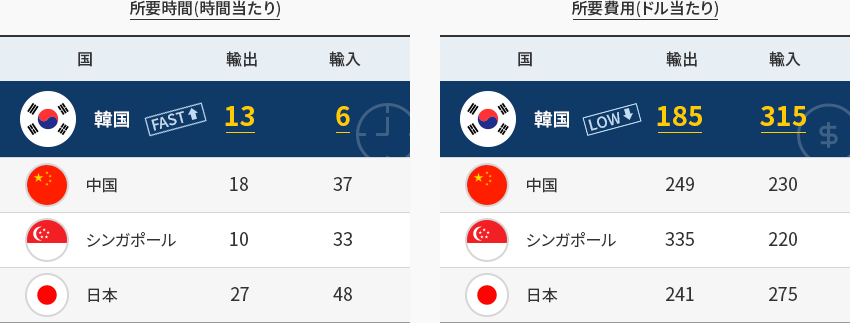
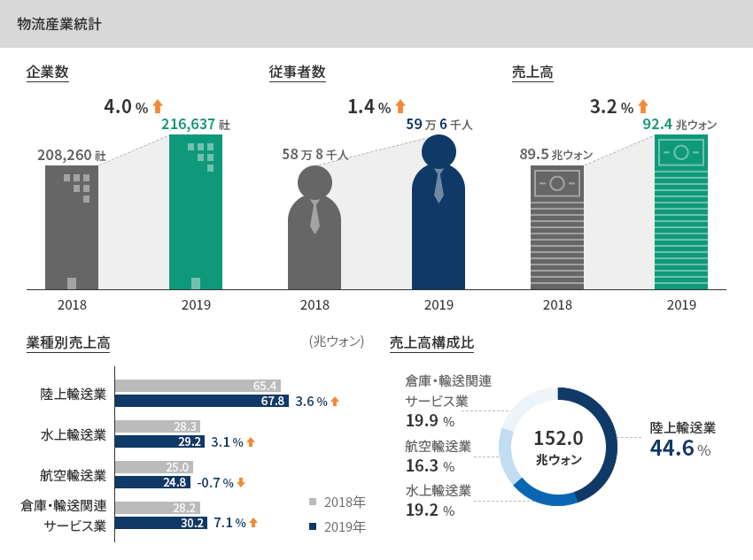
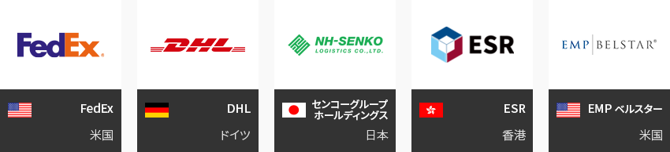
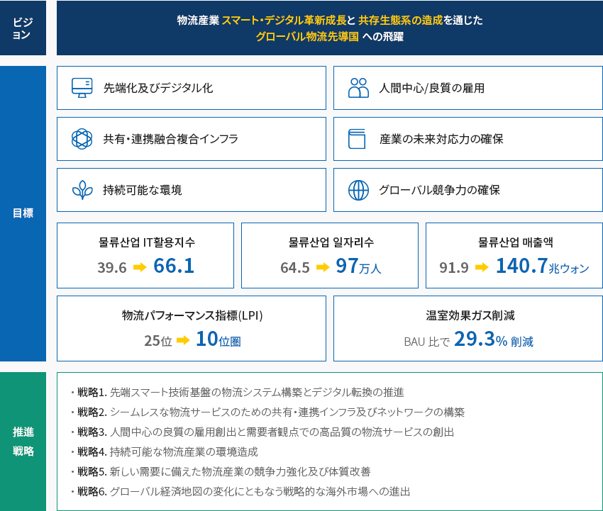
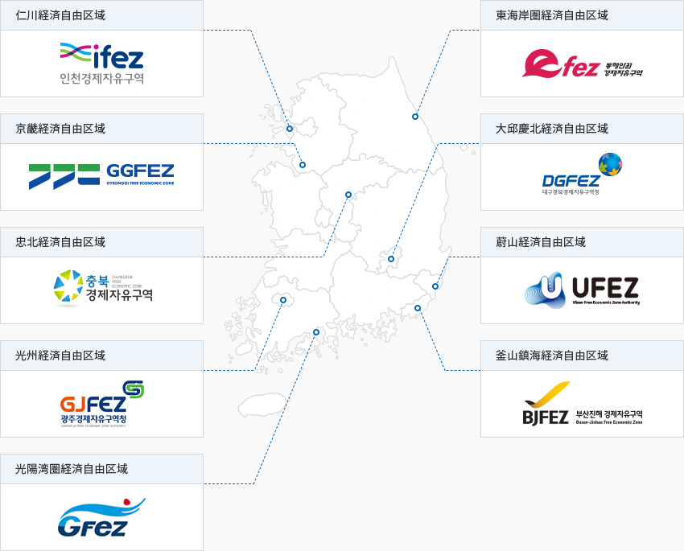

物流
- Home
- Why KOREA
- 産業
- 物流
物流
Logistics
-
より大きく、より早く 拡大する韓国物流 コンテンツを閉じるより大きく、より早く 拡大する韓国物流韓国は世界2位のトランシップ港の釜山港と航空貨物取扱量世界3位の仁川空港を保有しており、
輸出入にかかる時間が短く費用が安いため、企業の貿易活動が容易である。「韓国の主要物流インフラ」 ※ 出所 : Busan Port Authority(2020)
※ 出所 : Busan Port Authority(2020)
※ 出所 : 世界空港評議会(ACI) (2020)「韓国の輸出入所要時間及び費用」所要時間(時間当たり)韓国の輸出入所要時間及び費用 国, 輸出, 輸入 国 輸出 輸入 韓国(fast) 13 6 中国 18 37 シンガポール 10 33 日本 27 48 所要費用(ドル当たり)韓国の輸出入所要時間及び費用 国, 輸出, 輸入 国 輸出 輸入 韓国(fast) 185 315 中国 249 230 シンガポール 335 220 日本 241 275
※ 出所 : World Bank Group 「Doing Business 2020 Report」 -
航空及び水上輸送業中心で 持続的に成長 コンテンツを開く航空及び水上輸送業中心で 持続的に成長韓国の物流産業は2000年代以前まで経済の高度成長と輸出中心の経済構造によって量的な急成長を遂げており、,
2000年代になってから中国市場の浮上や政府の物流インフラへの投資(仁川空港及び釜山新港、内陸物流基地など)に後押しされ質的に
も成長した。狭い国土と北朝鮮によるアジア大陸への陸路断絶で国内物流は貨物自動車輸送市場が中心で、
鉄道貨物市場は極めて脆弱な構造である。一方、国際物流は海運と航空が主流で、鉄道の利用は皆無である。3方が海に囲まれており中国と日本の間に位置する地政学的位置と輸出主導型経済に後押しされ、首都圏(仁川港、仁川空港)と
釜山圏(釜山港)を中心に国際物流産業が発達している。首都圏-釜山圏物流ベルトには交通網以外に空港·港湾-内陸物流基地など
の物流インフラが集中的に位置している。2019年基準の韓国の物流産業は企業数、従事者数、売上高とも前年比増加した。企業数は21万7千社、
従事者数は59万6千人、売上高は92兆4千億ウォンであり、生活物流など取扱量の増加とこれによる物流施設の拡充、
物流関連情報システムの構築などで企業数(4.0%)、従事者数(1.4%)、売上高(3.2%)がともに増加している。貨物輸送業は
前年比で企業数(4.3%↑)、従事者数(2.6%↑)、売上高(2.3%↑)がすべて増加しており、物流施設運営業も企業数(0.4%↑)、
従事者数(2.5%↑)、売上高(4.4%↑)がすべて増加した。物流関連サービス業の企業数(1万2千社)及び従事者数(8万5千人)は
それぞれ0.2%、6.0%減少した半面、売上高(17.1兆ウォン)は5.2%増加した。「韓国物流産業の現況」物流産業統計- 企業数 - 2018(208,260社) → 2019(216,637社) 4.0% 上昇
- 従事者数 - 2018(58万8千人 ) → 2019(59万6千人) 1.4% 上昇
- 売上高 - 2018(89.5兆ウォン ) → 2019(92.4兆ウォン ) 3.2% 上昇
-
業種別売上高
- 陸上輸送業 - 2018(65.4) → 2019(67.8) 3.6% 上昇
- 水上輸送業 - 2018(28.3) → 2019(29.2) 3.1% 上昇
- 航空輸送業 - 2018(25.0) → 2019(24.8) -0.7% 下落
- 倉庫・輸送関連サービス業 - 2018(28.2) → 2019(30.2) 7.1% 上昇
-
売上高構成比(152.0兆ウォン )
- 陸上輸送業 44.5%
- 水上輸送業 19.2%
- 航空輸送業 16.3%
- 倉庫・輸送関連サービス業 19.9%
※ 資料: 統計庁、報道資料 2019年基準運輸業調査結果(暫定)(物流産業統計を含む)、2020.12.8 -
多様な形の国内 物流ビジネスの推進 コンテンツを開く多様な形の国内 物流ビジネスの推進2020年基準で韓国の物流・流通産業部門への外国人直接投資は18億3,117万ドルであり、運輸倉庫(物流)分野における外国人直接投資は前年比38.7%増加した。
このうち約92%がグリーンフィールド投資で行われており、香港、米国、中国、シンガポール、ドイツ、アラブ首長国連邦など多様な国々から韓国に進出している。2020年基準の韓国の物流産業部門(運輸・倉庫)の外国人直接投資の規模は、計44件、632百万ドルの水準で、
最近7年間の誘致総額は3,154百万ドルに上っている。外国人直接投資は、国内外の景気以外に周辺のライバル国の
投資誘致環境(政策、施設、市場規模など)に左右されることから投資規模は多少浮き沈みがある。
2011~2013年には66~143百万ドル水準と低かったものの、最近7年間をみると3~6億ドル水準に大きく増加しており、
同じ水準で安定的に推移している。投資類型による投資規模(届出金額)でみると
「M&A」型が17%であるのに対し、「グリーンフィールド投資」投資は83%で絶対的な割合を占めている。
-
物流産業 外国人直接投資の現況 コンテンツを開く物流産業 外国人直接投資の現況「物流(運輸・倉庫)産業の外国人直接投資の現況(届出ベース)」(単位 : 件、千USD)
物流(運輸・倉庫)産業の外国人直接投資の現況(届出ベース) 区分, 年度, 計 区分 2014 2015 2016 2017 2018 2019 2020 計 投資規模 件数 全体 53 81 59 57 58 52 44 404 1百万ドル未満 38 57 44 36 40 30 30 275 1百万ドル ~
1千万ドル未満11 18 10 21 13 17 4 94 1千万ドル ~
1億ドル未満3 5 4 1 4 4 8 29 1億ドル以上 1 2 1 2 1 1 2 10 金額 全体 412,051 667,334 349,090 294,100 344,345 455,763 632,296 3,154,979 1百万ドル未満 26,331 25,851 20,510 17,908 15,938 12,713 13,767 133,018 1百万ドル ~
1千万ドル未満56,572 124,817 47,689 110,615 94,767 118,413 20,666 573,548 1千万ドル ~
1億ドル未満261,200 184,000 180,400 54,000 377,986 450,400 430,159 1,938,145 1億ドル以上 480,000 1,000,000 449,572 405,676 200,000 330,000 800,000 3,665,248 投資類型 件数 全体 53 81 59 57 58 52 44 404 M&A 5 10 14 7 4 12 9 61 グリーンフィールド 48 71 45 50 54 40 35 343 金額 全体 412,051 667,334 349,090 294,100 344,345 455,763 632,296 3,154,979 M&A 5,568 13,128 299,438 110,136 7,408 15,030 70,855 521,563 グリーンフィールド 406,483 654,205 49,652 183,964 336,937 440,733 561,441 2,633,415 ※ 資料 : 産業通商資源部、「外国人投資統計」ここ7年間(2014~2020)、国内の物流産業に最も多くの投資(申告金額基準)をした国は米国(1,703百万ドル)であり、
次はシンガポール(340百万ドル)、中国(308百万ドル)、オランダ(247百万ドル)、ヴァージン諸島(142百万ドル)、香港(69百万ドル)、
日本(67百万ドル)の順になっており、韓国の物流産業に行われた投資総額の中でこれら7ヵ国の投資金額が91.3%
という絶対的な割合を占めている。国別の投資規模をみると、米国は2019年から2年連続300百万ドルを投資しており、次に中国が100百万ドルを
投資している。「主要国別の韓国物流産業への外国人直接投資の現況(届出ベース)」(単位 : 件、千USD)主要国別の韓国物流産業への外国人直接投資の現況(届出ベース) 区分, 年度, 計 区分 2014 2015 2016 2017 2018 2019 2020 計  米国
米国
申告件数 5 14 6 10 12 10 7 64 申告金額 256,142 520,799 6,846 114,935 173,524 305,415 325,824 1,703,485  日本
日本
申告件数 11 13 12 9 8 2 1 56 申告金額 12,827 13,325 9,371 18,186 10,240 3,642 235 67,825  中国
中国
申告件数 10 14 14 11 5 7 7 68 申告金額 4,628 2,629 6,623 1,613 101,553 90,074 101,061 308,181 香港 申告件数 6 8 8 6 6 13 8 55 申告金額 1,743 46,809 6,216 7,721 1,982 4,031 1,047 69,549 シンガポール 申告件数 6 8 5 6 6 5 7 43 申告金額 9,230 40,125 70,890 105,352 18,920 6,928 89,163 340,608 オランダ 申告件数 1 1 1 1 3 0 0 7 申告金額 870 8,434 224,786 217 13,095 0 0 247,402  ヴァージン諸島
ヴァージン諸島
申告件数 2 1 1 4 7 3 0 18 申告金額 115,600 302 116 9,960 13,007 3,561 0 142,545 ※ 資料 : 産業通商資源部、「外国人投資統計」 -
物流革新及び新産業創出に向けた政策推進 コンテンツを開く物流革新 び新産業創出に向けた政策推進韓国の物流政策は「国家物流基本計画(計画期間：10年)」に基づき、政策基調と細部の推進事項が策定されている。
2021年7月に発表された「国家物流基本計画(2021‐2030)」によると、韓国は大きく6つの推進戦略を立て、物流産業のスマート・
デジタル革新成長と共存生態系の造成を通じたグローバル物流先導国への飛躍を目指している。ビジョン - 物流産業スマート・デジタル革新成長と共存生態系の造成を通じたグローバル物流先導国への飛躍目標- 先端化及びデジタル化
- 人間中心/良質の雇用
- 共有・連携融合複合インフラ
- 産業の未来対応力の確保
- 持続可能な環境
- グローバル競争力の確保
- 物流産業IT活用指数 : 39.6 → 66.1
- 物流産業雇用数: 64.5 → 97万人で
- 物流産業の売上高 : 91.9 → 140.7兆ウォン
- 物流パフォーマンス指標(LPI) : 25位 → 10位圏
- 温室効果ガス削減 : BAU比で29.3%削減
推進戦略- 戦略1. 先端スマート技術基盤の物流システム構築とデジタル転換の推進
- 戦略2. シームレスな物流サービスのための共有・連携インフラ及びネットワークの構築
- 戦略3. 人間中心の良質の雇用創出と需要者観点での高品質の物流サービスの創出
- 戦略4. 持続可能な物流産業の環境造成
- 戦略5. 新しい需要に備えた物流産業の競争力強化及び体質改善
- 戦略6. グローバル経済地図の変化にともなう戦略的な海外市場への進出
※ 資料: 国土交通部、国物流基本計画(2021-2030)、2021.7 -
経済自由区域及び自由貿易地域中心の 物流クラスター コンテンツを開く経済自由区域及び自由貿易地域中心の 物流クラスター国家物流体系において拠点の役割をする内陸物流基地と複合物流ターミナルは5大圏域(首都圏、釜山圏、中部圏、湖南圏、嶺南圏)で
7ヵ所が運営されている。 荷主企業と専門物流企業の物流団地は全国に計30ヵ所(総面積：1,200万㎡)が指定され、運営中である。物流企業はほとんど関税留保、租税減免、基盤施設提供などの優遇措置が適用される経済自由区域と自由貿易地域を中心に分布している。
2003年に仁川をはじめとして釜山・鎮海、光陽湾圏、京畿、仁川、大邱・慶北、忠北、東海岸圏、光州、蔚山の9つの経済自由区域が造成・運営されている。
経済自由区域内に6,025(‘20年基準)の国内外の物流企業が入っており、国際物流港湾のある仁川、釜山・鎮海、光陽湾圏
などには物流業とクラスターが形成されている。「韓国内の主要物流及び港湾の立地」- 仁川経済自由区域
- 東海岸圏経済自由区域
- 京畿経済自由区域
- 東海岸圏経済自由区域
- 忠北経済自由区域
- 蔚山経済自由区域
- 光州経済自由区域
- 釜山鎮海経済自由区域
- 光陽湾圏経済自由区域
※ 資料 : 経済自由区域(http://www.fez.go.kr) [移動]
※ 資料協力 : 韓国交通研究院


Invest KOREA
流通/物流PM
カン・ナムフン
サービス産業誘致チーム
T.+82-2-3460-3285
おすすめの立地情報
産業団地情報
[Busan Metropolitan City Gangseo-gu] Busan New Port Backward International
Industrial Logistic City (Stage 1) General Industrial Complex (Busan Jinhae Free Economic
Zone)
Click [Go to Detailed Information] to go to the relevant information screen of
Smart K-Factory service of Industrial Complex Corporation.
-
Complex nameBusan New Port Backward International Industrial Logistic City (Stage 1) General Industrial Complex (Busan Jinhae Free Economic Zone)
-
Initial designation date2010.03.03
-
Designated area(m2)5,707,591
-
ManagementBusan-Jinhae Free Economic Zone Authority
-
Nearby RailwayBusan Station
-
Distance from station(km)26
-
Nearby AirportGimhae International Airport
-
Distance from airport(km)19
-
Industrial water Supply capacity(ton/day)20479(㎥/day)
-
Affiliation local governmentBusan Metropolitan City Gangseo-gu
-
Population3,401,078
産業団地情報
[Incheon Metropolitan City Bupyeong-gu] Korea Export (Bupyeong
District)
Click [Go to Detailed Information] to go to the relevant information screen of
Smart K-Factory service of Industrial Complex Corporation.
-
Complex nameKorea Export (Bupyeong District)
-
Initial designation date1965.06.16
-
Designated area(m2)609,361
-
ManagementKorea Industrial Complex Corporation
-
Nearby RailwayBupyeong Station
-
Distance from station(km)5
-
Nearby AirportGimpo International Airport
-
Distance from airport(km)14
-
Industrial water Supply capacity(ton/day)384000(㎥/day)
-
Affiliation local governmentIncheon Metropolitan City Bupyeong-gu
-
Population2,943,491
産業団地情報
[Incheon Metropolitan City Seo-gu, Nam-gu, Bupyeong-gu] Korea Export(Juan
District)
Click [Go to Detailed Information] to go to the relevant information screen of
Smart K-Factory service of Industrial Complex Corporation.
-
Complex nameKorea Export(Juan District)
-
Initial designation date1969.08.05
-
Designated area(m2)1,176,829
-
ManagementKorea Industrial Complex Corporation
-
Nearby RailwayBupyeong Station
-
Distance from station(km)7
-
Nearby AirportGimpo International Airport
-
Distance from airport(km)25
-
Industrial water Supply capacity(ton/day)250000(㎥/day)
-
Affiliation local governmentIncheon Metropolitan City Seo-gu, Nam-gu, Bupyeong-gu
-
Population2,943,491
産業団地情報
[Chungcheongbuk-do Eumseong County] Oseon Industrial Complex
Click [Go to Detailed Information] to go to the relevant information screen of
Smart K-Factory service of Industrial Complex Corporation.
-
Complex nameOseon Industrial Complex
-
Initial designation date2014.04.11
-
Designated area(m2)459,481
-
ManagementChungcheongbuk-do Eumseong County
-
Nearby RailwayEumseong Station
-
Distance from station(km)19
-
Nearby AirportCheongju International Airport
-
Distance from airport(km)43
-
Industrial water Supply capacity(ton/day)871(㎥/day)
-
Affiliation local governmentChungcheongbuk-do Eumseong County
-
Population94,179
産業団地情報
[Gyeonggi-do Uiwang City] Uiwang Techno Park
Click [Go to Detailed Information] to go to the relevant information screen of
Smart K-Factory service of Industrial Complex Corporation.
-
Complex nameUiwang Techno Park
-
Initial designation date2016.12.28
-
Designated area(m2)158,708
-
ManagementGyeonggi-do Uiwang City
-
Nearby RailwaySuwon Station
-
Distance from station(km)10
-
Nearby AirportGimpo International Airport
-
Distance from airport(km)39
-
Industrial water Supply capacity(ton/day)754(㎥/day)
-
Affiliation local governmentGyeonggi-do Uiwang City
-
Population162,751
産業団地情報
[Gangwon-do Donghae City] Bukpyeong 2nd General Industrial Complex
Click [Go to Detailed Information] to go to the relevant information screen of
Smart K-Factory service of Industrial Complex Corporation.
-
Complex nameBukpyeong 2nd General Industrial Complex
-
Initial designation date2013.10.14
-
Designated area(m2)598,964
-
ManagementGangwon-do Donghae City
-
Nearby RailwayChuam Station
-
Distance from station(km)1
-
Nearby AirportYangyang International Airport
-
Distance from airport(km)93
-
Industrial water Supply capacity(ton/day)2,153(㎥/day)
-
Affiliation local government2,153
-
Population90,548